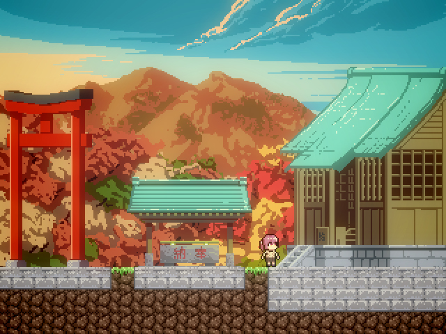
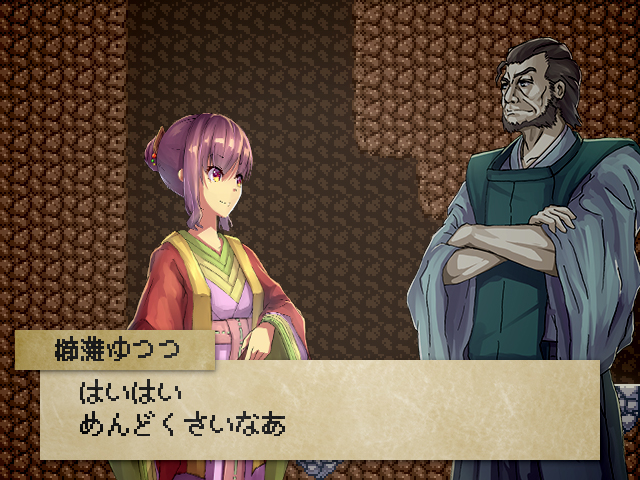
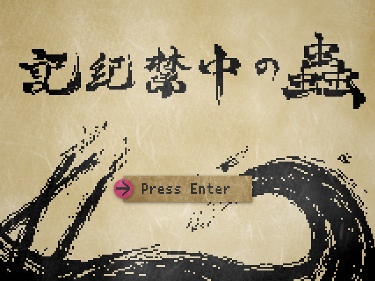

ストーリー
主人公、櫛灘ゆつつは山奥の神社を訪れ、祠の奥に広がる不思議な空間に迷い込んでしまう。
そこで待っていたのは拘束された神スサノオ、そして祠を治める神々だった……！
スサノオと協力し、神々やその手下を倒したり、アイテムを集めて謎を解いたりしながら脱出を目指そう！
ダウンロード
ダウンロード v1.00- ファイル
- Kikikinchu.zip
- ファイルサイズ
- 208MB
動作確認環境
- OS
- Windows7/8/10
- メモリ
- 512MB以上
このゲームはWindows専用ソフトです。他のOSやスマートフォンではプレイできません。ご了承ください。
紹介
謎解き要素ありのドット絵和風アクションゲームです。
この作品は「MIX」というグループの4名による合作です。最大のウリは絵・音楽の素材はすべて自作という点ですので、細かいところまで楽しんでいただけると幸いです。
インストール
インストーラーはありません。
ダウンロードしたzipファイルを展開し、記紀禁中の蟲.exeを起動してください。
操作方法
- ZEnter
- 決定
- Z
- ジャンプ
- X
- ショット
- ←→
- 移動
- ↑↓
- はしご
- Space
- メニュー(アイテムを見る、使う)
- ↓
- その場を調べる(看板を読む、セーブを取る等)
詳しくは操作方法をご覧ください。
更新履歴
- 2018/05/12 v1.00 公開
規約
- 当サイトはリンクフリーです。
- 本ゲームをプレイしたことによって生じた全ての損害・不具合等に関しては、一切の責任を負いません。
- 再配布およびダウンロードファイルへの直リンクはおやめください。
- 実況動画などを公開していただくのは全くかまいませんが、一声かけていただくととても喜ぶので是非よろしくお願いします。
お問い合わせ
クリア報告、ご質問ご意見ご感想などお待ちしています！Twitterまたはmix.official1009@gmail.comまでお願いします。